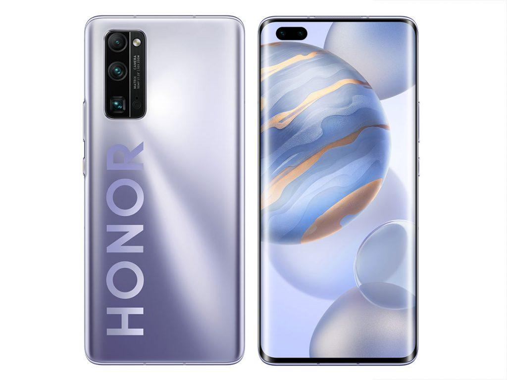

В Samsung потратили около десяти лет, чтобы разработать технологию гибких экранов, довести до ума не только качество самих матриц, но и их себестоимость.
В Z Flip экран имеет напыление, которое делает его сходным в чем-то со стеклом.
За 65 минут можно зарядить батарею на 100% (время зарядки зависит от окружающей температуры).

Во-первых, смартфон выдерживает складывание-раскладывание 1 млн раз. Ждём тестов западных журналистов.
Во-вторых, батарея 5000 мАч, что больше, чем у конкурентов. Плюс быстрая зарядка 67 Вт, заряжающая смартфон за 37 минут до 100%. Однако беспроводной зарядки у смартфона нет.
В-третьих, Xiaomi сделали условный аналог DeX-режима от Samsung, когда быстрым свайпом можно превратить интерфейс смартфона в Windows-подобный: работа с окнами, можно выбрать фотографии и перетащить в мессенджер и т.д.
Honor 30
Он тоже имеет ряд ништяков, но зачем нам вдаваться в подробности?